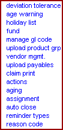

Blacksmith Applications, www.blacksmithapps.com
URL Properties: billbacks/settings/expectations.cfm

Use this page to enter your billback deviation tolerance parameters.
URL Properties: billbacks/settings/expectations.cfm
Enter the number of days after the billback day that the billback should be marked as being in danger of being deducted. This is the billback age warning period.
URL Properties: billbacks/settings/peril_age.cfm
Use the billback holiday management page to view, edit and create holidays.
URL Properties: billbacks/Check_Book/Bank_Tran/General_Ledger_Account/Create_Holidays.cfm
Use the Payables Fund settings to manage AR based on fiscal year. Click the button next to a fiscal year to toggle its state between On/Off.
This is where you indicate which fund "buckets" from which to draw the incentives monies.
Be sure you understand the impact of turning off a fiscal year, per the message at the bottom of the fund page: "Turning OFF a fiscal year will turn off access to the funds from that fiscal year within the program wizard, all existing program templates created and associated with that fiscal year's AR's and will accelerate all outstanding payment requests to expired."
URL Properties: GL_Code/GL_Code_In_Program/Fund_Management.cfm?PageTitle=programs: Fund Management
URL Properties: GL_Code/Upload_Gl_Code/index.cfm
Search Tab
Use the gl code page to search, view and upload GL data. You can search on Active, Previous Active, Inactive or Tonight's Upload GL data, and you can drill down to almost any level of detail using the GL fields to narrow your search.
The listing that displays is specific to your organizations GL codes.
Use the dropdowns to select the data to include in your search using the fields on the page: A/R Description, Description, A/R, Approp, Allocation, First Ship, Last Ship, Company, Location, Cost Center, Natural Acct, Channel, Product Group, IDC, Fund Type, Merch Type, Pro Term, Fund#, Fiscal Year.
Log Tab - Click the Log Tab to display the AR Log.
This log tells you the A/R Code, the Invalid Reason (why it could not be uploaded), Uploaded By (the user id of the user who uploaded) and Uploaded On (the date on which it was uploaded using the Upload tab.
The A/R code column is linked, so that you can click the A/R code and display the actual A/R record and examine the field that was found to be invalid. After viewing the A/R record, click [back to log list] to return to the log.
Upload - Upload GL codes from your 3d-party accounting system using an Excel spreadsheet.
TempLog - This log differs from the "log" in that it is the initial error log that is created when you upload. This log contains the findings of the initial data validation that the system does on the upload.
For example, if the system sees that there is no entry for the company field in the record, it will consider the record invalid and place the entry in the temp log. You can view the record by clicking its link in the templog.
URL Properties: GL_Code/Product_Grp/Upload_Product_Grp.cfm
When you select the upload product group setting, the standard Stored Records/Edit Record page displays. The product groups correspond to your organization's grouping of products.
To create an upload record, use the Browse button to select the file to upload. The worksheet name defaults to Sheet1. Use the calendar icon to select the activation date for this product group. Select the Fiscal Year using the dropdown.
Click [create new entry] to create the new upload record.
Click [upload data] to upload a spreadsheet of product group data.
URL Properties: GL_Code/Vendor_management/vendor_Form.cfm
The Vendor Management page is where you can search on, view, edit and create vendor records. Often the vendor is the distributor.
URL Properties: Billbacks/capture/Upload_Billback/index.cfm
Use upload payables to create billback records manually (when you realize that billback data is missing).
Upload tab
You can browse to locate the billback header and detail files to create a new entry, and you can view existing manually selected billback header and detail files.
In the Stored Records section of this page, the columns include the billback record ID, Uploaded By, and Status (Uploaded or Not Uploaded).
The Upload Billbacks section of this page shows you the Billback record ID of the selected record from the Stored Records list, the header and detail file ID's, and the view links with which you can display the actual header and detail file contents.
Use the [create new entry] link to select the information for a new upload, after which you can click the [upload data] link to upload the billback data.
Log tab
Use the Log tab to display the invoice number and invalid reason for any billback uploads that fail. For example, the reason may say that there was no data for the item.
URL Properties: settings/Billback_Batch_Print.cfm
Use claim print to print today's billback claims (click [run today's print job], or to reprint any batch of billbacks using a calendar to choose the billback run you want to reprint.
URL Properties: Deductions/Settings/Stage/Create_Stage.cfm?PageTitle=Deductions: Action List
When you click actions, the standard Stored Records/Edit Record page displays.
Use actions to manage your deductions activities.
The Deductions home page can display the actions relative to the number of deductions or to the deduction dollar amount. Actions include Call Broker, Call Distributor, Check OS &D, No Action Taken, and other you may create. Change the default action by selecting the action record on the Stored Records page and selecting the Default checkbox on the Edit Record page.
Enter a new action by entering the Description, Availability and Default information in the Edit Records section, and then clicking the [save data] link. Your entry appears in the Stored Records section.
URL Properties: Deductions/Settings/Aging/Create_Aging.cfm?PageTitle=Deductions: Aging Management
Use the aging page to customize your aging ranges, labels and colors.
Aging Count: to add an aging category, enter the total number of aging categories in Aging Count and click Go. For example, if there are already 4 aging categories and you want to add another category, change the 4 in Aging Count to 5 and click Go. A new Aging 5 range is added at the bottom of the list.
Next, enter a new End Range number of days in the previous aging bucket (in this example, aging range 4). The newly added age range is calculated, and you can enter a label for it and select a color for it.
Within Deductions, the number of deductions matching each aging category display.
URL Properties: deductions/Assignment/index2.cfm?PageTitle=Deductions: Manage Deductions Assignment
Deductions Analysts are created from the User List, and you assign them to manage deductions by market and customers.
There are four tabs on the deductions assignment page: View, Analyst, Market, Family and Default.
View shows you all assigned analysts (and indicates which analyst is the default analyst to assign) and shows you the markets and customers to which the analysts are assigned. See the markets and customers assigned to an analyst by clicking the right-facing red triangle next to Show Market and Show Customer. When you click the Show Market or Show Customer triangle, the terms change to say Hide Market and Hide Customer.
Analyst allows you to add users from the User List to Analysts, and lets you remove existing Analysts as well as to assign their deductions to another analyst.
Market lets you assign markets to analysts (the markets assigned to an analyst display in the View tab when you select Show Markets). Click the right-facing red triangle next to an analyst and the market assignments for the analyst display, with arrow buttons to the right. Use the arrow buttons to add and remove markets from an analyst; use the double right-arrow button to remove all markets from an analyst.
Family shows you the analyst list, the customers to whom each is assigned, and allows you to add and remove customers from each analyst's assignment list. Family assignment uses the same buttons as Market: a red triangle to expand and show customer assignments, and arrow buttons to manage the customer assignment.
Default shows you which analyst is the current default analyst to assign, and lets you change the default analyst using the [save selection] link. When a billback comes into the system the default analyst will be assigned to it.
URL Properties: Deductions/Settings/Auto_Close.cfm?PageTitle=Deductions: Auto Close
Auto Close allows you to control the deduction amount under which you want to simply auto-close it, or write it off to get it off the books. You might write off amounts that are too small to warrant the effort of researching and confirming it, for example.
Enter the auto-close amount in the field next to "Close the deductions where the deduction amount is less than or equal to".
Select the reason code to use for any deduction that is auto-closed. Click [save data].
URL Properties: Deductions/Settings/Reminder_Status_Create.cfm?PageTitle=Deductions: Reminder Type Management
When you click reminder types, the standard Stored Records/Edit Record page displays.
View, enter and make active or inactive your deduction reminder types. These reminders display on the Deductions home page.
URL Properties: Deductions/Settings/Reason_Code/Create_Reason_Code.cfm?PageTitle=Deductions: Reason Code
When you click reason codes, the standard Stored Records/Edit Record page displays.
The Deduction reason code records include a setting indicating whether the reason code requires approval (Need Approval: Yes/No).
When you use a reason code that requires approval, the appropriate person is notified.